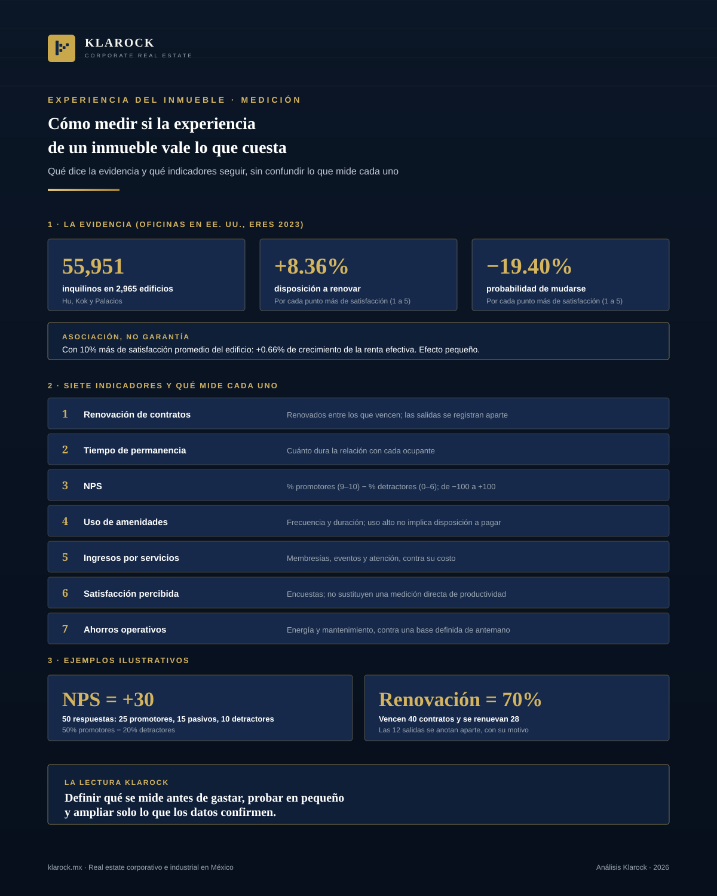

Corporativo · 2026-11-02
Cómo medir si la experiencia de un inmueble vale lo que cuesta
Cuando se habla de experiencia en un inmueble, casi siempre se habla de qué ofrecer: amenidades, tecnología, servicios. La pregunta que decide la inversión es otra: ¿cómo se comprueba que funciona? La evidencia disponible indica que la satisfacción de los ocupantes se asocia con más renovaciones y menos mudanzas, pero el efecto sobre la renta es pequeño y no se puede dar por hecho en cada mercado.

Resumen ejecutivo
Cuando se habla de experiencia en un inmueble, casi siempre se habla de qué ofrecer: amenidades, tecnología, servicios. La pregunta que decide la inversión es otra: ¿cómo se comprueba que funciona? La evidencia disponible indica que la satisfacción de los ocupantes se asocia con más renovaciones y menos mudanzas, pero el efecto sobre la renta es pequeño y no se puede dar por hecho en cada mercado.
Este artículo propone una forma práctica de medirla: cinco dimensiones para diseñarla, siete indicadores para seguirla, una regla para separar lo que mide cada uno y tres cuidados antes de ampliar la inversión. Complementa nuestro análisis sobre la experiencia de usuario como métrica de valor corporativo, que explica por qué hoy importa; aquí el tema es cómo medirla.
1. Qué dice la evidencia, y qué no
El estudio más completo que encontramos es de Minyi Hu, Nils Kok y Juan Palacios, presentado en la conferencia anual de la European Real Estate Society (2023). Analizó encuestas a 55,951 inquilinos corporativos en 2,965 edificios de oficinas de Estados Unidos. Con satisfacción medida de 1 a 5, cada punto adicional se asoció con:
- —8.36% más disposición a renovar el contrato;
- —11.03% más disposición a recomendar el edificio;
- —19.40% menos probabilidad de mudarse de verdad.
A nivel edificio, una satisfacción promedio 10% mayor se asoció con un crecimiento ligeramente mayor de la renta efectiva (0.66%) y un menor crecimiento de la vacancia (2.32%).
Tres límites importantes. Son datos de oficinas en Estados Unidos, no de México. Son asociaciones, no efectos probados: un edificio bien administrado puede tener ocupantes satisfechos y buen desempeño por la misma causa. Y el efecto sobre la renta es modesto. Conclusión práctica: la experiencia ayuda sobre todo a retener, y su efecto en el precio hay que comprobarlo en cada activo contra lo que cuesta ofrecerla.
Sobre bienestar, el estudio COGfx de la Universidad de Harvard encontró, en oficinas simuladas, que las puntuaciones de función cognitiva fueron significativamente mejores con ambientes "verdes" y mayor ventilación. Es un estudio de laboratorio: sirve para justificar prestar atención al aire y la ventilación, no para prometer una cifra de productividad.
2. Cinco dimensiones para diseñarla
- 1.Funcionalidad. Accesos, logística, conectividad y servicios básicos sin fricciones.
- 2.Confort y bienestar. Calidad del aire, luz natural, acústica, ergonomía y espacios verdes.
- 3.Tecnología. Conectividad confiable, automatización y aplicaciones de gestión, con datos que realmente se usen.
- 4.Servicios y comunidad. Eventos, amenidades compartidas, atención personalizada y alianzas locales que respondan a lo que piden los usuarios.
- 5.Identidad. Arquitectura y comunicación que construyan sentido de pertenencia.
Suelen administrarse por separado (mantenimiento, TI, mercadotecnia, operación). La experiencia mejora cuando alguien la coordina como una sola.
3. Siete indicadores y qué mide cada uno
| Indicador | Qué mide | Cuidado | |---|---|---| | Renovación de contratos | Contratos renovados entre los que vencen en el periodo | Registrar aparte las salidas; no es lo mismo que retención | | Tiempo de permanencia | Cuánto dura la relación con cada ocupante | Depende también del ciclo del mercado | | NPS (Net Promoter Score) | Disposición a recomendar | Ver fórmula abajo | | Uso de amenidades | Frecuencia y duración de uso de espacios comunes | Uso alto no implica que paguen por ello | | Ingresos por servicios | Ventas de servicios adicionales (membresías, eventos, atención) | Compararlos con su costo | | Satisfacción y productividad percibida | Encuestas sobre experiencia y rendimiento | Es percepción; no sustituye una medición directa | | Ahorros operativos | Menor gasto por eficiencia energética o mantenimiento predictivo | Contra una base definida de antemano |
Cómo se calcula el NPS. Se pregunta "¿qué tan probable es que recomiende este inmueble?" con una escala de 0 a 10. Quienes responden 9 o 10 son promotores; 7 u 8, pasivos; 0 a 6, detractores. El NPS es el porcentaje de promotores menos el de detractores, y va de −100 a +100.
Ejemplo ilustrativo: en un edificio responden 50 ocupantes: 25 promotores (50%), 15 pasivos y 10 detractores (20%). NPS = 50 − 20 = +30.
Ejemplo de renovación: vencen 40 contratos en el año y se renuevan 28: renovación de 70%. Las 12 salidas se registran aparte, con su motivo.
Un indicador solo no cuenta la historia. Lo útil es leerlos juntos: si el NPS sube pero la renovación no, algo distinto al servicio está pesando (precio, ubicación, necesidad de espacio).
4. Cuánto cuesta frente a cuánto deja
Un servicio de experiencia debe pasar la misma prueba que cualquier inversión: ¿cuánto agrega al ingreso operativo neto (NOI) después de sus propios costos? Eso incluye el ingreso extra por servicios o permanencia, y también personal, mantenimiento, licencias y la plataforma que lo sostiene. Incorporar amenidades no garantiza una prima de renta por sí mismo.
5. Tres cuidados antes de ampliar la inversión
- —Pilotos antes de escalar. Probar un servicio en un edificio o un piso, con una meta definida (por ejemplo, un NPS mínimo o un porcentaje de uso) y una fecha para decidir si se amplía.
- —Evitar lo que nadie usa. Fallan las inversiones en tecnología que nadie adopta, amenidades sin demanda local y servicios que dependen de eventos esporádicos. Los datos de uso y las encuestas deben corregir la oferta, no solo reportarla.
- —Datos de los usuarios. La nueva Ley Federal de Protección de Datos Personales en Posesión de los Particulares, publicada el 20 de marzo de 2025 y vigente desde el 21 de marzo, exige un aviso de privacidad y consentimiento para tratar datos personales, y ya no permite usar los datos para finalidades "compatibles o análogas" sin nuevo consentimiento. Si se miden encuestas, accesos o uso de espacios, conviene revisar el aviso y el tratamiento con un asesor legal.
6. Qué cambia para cada participante
- —Desarrolladores. Decidir desde el concepto qué se va a medir, no solo qué se va a ofrecer; el diseño de servicios y tecnología se decide junto con la arquitectura.
- —Operadores. Necesitan capacidad para gestionar comunidad, alianzas y datos, y ajustar la oferta a lo que se usa y se valora.
- —Inversionistas. Los ingresos por servicios y la permanencia aportan información, pero se leen junto con rentas base, vacancia y costos, sin suponer que más satisfacción sube el valor en la misma proporción.
- —Gobiernos y reguladores. Pueden favorecer prácticas que mejoren el bienestar urbano: espacios públicos, movilidad y eficiencia energética.
7. Perspectiva Klarock
La experiencia es una fuente de valor cuando arquitectura, tecnología, operación y mercadotecnia trabajan coordinadas y cuando se mide con indicadores honestos: lo que cada uno mide y lo que no. La regla es sencilla: definir qué se va a medir antes de gastar, probar en pequeño, y ampliar solo lo que los datos confirman.
Si su empresa evalúa cómo reposicionar un inmueble corporativo o comercial, el equipo de Klarock puede acompañarle en el análisis. Puede ver el inventario en klarock.mx.
Para una conversación sobre análisis de sitio y reposicionamiento, contáctenos al 668 189 4960.
Fuentes consultadas
- —Hu, M., Kok, N. y Palacios, J., "Tenant Satisfaction and Commercial Building Performance", 29th Annual European Real Estate Society Conference, Londres (2023): eres.architexturez.net
- —Harvard T.H. Chan School of Public Health, COGfx Study 1 y Allen et al., "The Impact of Green Buildings on Cognitive Function", Environmental Health Perspectives: healthybuildings.hsph.harvard.edu
- —Definición de Net Promoter Score (Reichheld, Bain & Company, 2003): Wikipedia, Net promoter score
- —EY México, "Nueva Ley Federal de Protección de Datos Personales en Posesión de los Particulares" (publicada en el DOF el 20 de marzo de 2025): ey.com
¿Te interesa esta oportunidad?
Escríbenos y un socio director te contactará en menos de 24 horas hábiles.
Contactar a un Socio Director